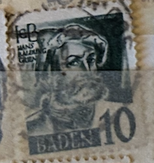
| SOURCE | TITLE| IMAGE MATCH | click to source page |
| eBay | Franz. Zone-Baden 3I Fleck right next the Cap unmounted mint / never h (9636853 | eBay | 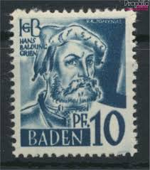 |
| Stampedia | French Occupied BADEN 1947 10 pfennig Occupied Stamps, | Hans Baldung Grien | 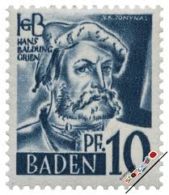 |
| Wikimedia.org | File:Fr. Zone Baden 1947 03 Hans Baldung.jpg - Wikimedia Commons | 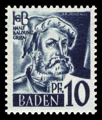 |
| ProBoards | Baden- French Occupation | The Stamp Forum (TSF) | 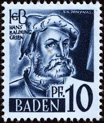 |
| Colnect | Stamp: Hans Baldung (Germany, French Occupation of Baden(Personalities and views from Baden (I)) Mi:DE-FB 3yvI,Sn:DE 5N3,Yt:DE-FB 3,Sg:DE-FB 3,Un:DE-FB 3 📮 | 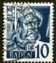 |
| GetArchive | 1992. Stamp of Belarus 0017 - public domain postal stamp scan - PICRYL - Public Domain Media Search Engine Public Domain Image | 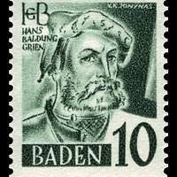 |
| Amazon.com | Amazon.com: Franz. Zone-Baden 3III Fleck Next N of Baden (Field 70) unmounted Mint/Never hinged ** MNH 1947 Clear Brands (Stamps for Collectors) : Toys & Games | 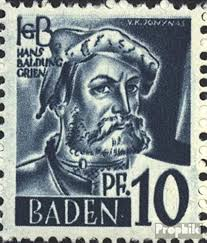 |
| Wikimedia.org | File:Fr. Zone Baden 1948 17 Hans Baldung.jpg - Wikimedia Commons | 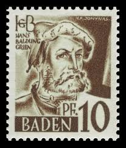 |
| ebid.net | GB, Queen Elizabeth Machin, light yellow 1976, 10½p on eBid United States | 195769786 | 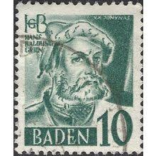 |
| Find Your Stamps Value | Precio de sello BADEN - Hans Baldung Grien 10pf Slate blue | 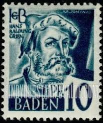 |
| Find Your Stamps Value | Prix du timbre BADEN - Hans Baldung Grien 10pf Dark green | 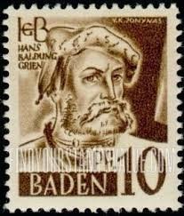 |
| eBay | Germany, French Zone Scott #5N21 VF MNH 1948 20 Pfg. Hans Baldung Grien | eBay | 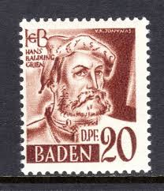 |
| Wikimedia.org | File:Fr. Zone Baden 1947 07 Hans Baldung.jpg - Wikimedia Commons | 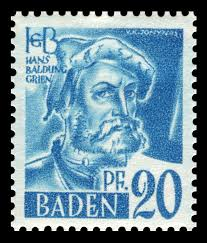 |
| Wikipedia | Datei:Fr. Zone Baden 1948 18 Johann Peter Hebel.jpg – Wikipedia | 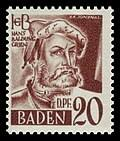 |
| Amazon.com | Amazon.com: Franz. Zone-Baden 11II F con Punto Conectado (Campo 47) 1947 Clear Brands (Sellos para coleccionistas) : Juguetes y Juegos | 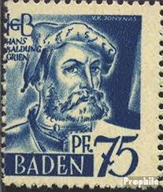 |
| Federal University of Agriculture, Abeokuta | BADEN | 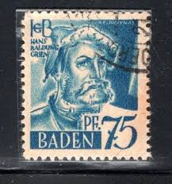 |
| iStock | West German Vintage Postage Stamp Adam Riese Stock Photo - Download Image Now - 1950-1959, Abstract, Art - iStock | 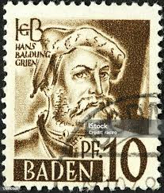 |
| Alamy | Baldung hi-res stock photography and images - Page 9 - Alamy | 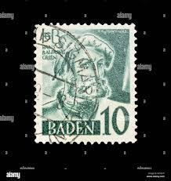 |
| Shutterstock | 14 resultados de imágenes, fotos de stock e ilustraciones libres de regalías para Hans baldung | Shutterstock | 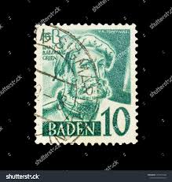 |
| Federal University of Agriculture, Abeokuta | BADEN STAMPS | 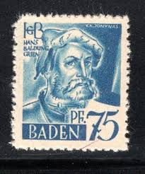 |
| eBay | Stamps Franz. Zone-Baden 1948 Mi 21 MNH 1948 (10521017 | eBay | 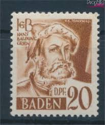 |
| Todocolección | sello de alemania, 10 pfennig baden 1947 - sin - Acquista Francobolli antichi di Germania su todocoleccion | 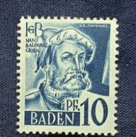 |
| Wikipedia | Datei:Fr. Zone Baden 1948 34 Hans Baldung.jpg – Wikipedia | 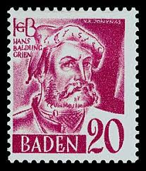 |
| eBay | Franz. Zone-Baden 3III Fleck next N of Baden (Field 70) unmounted mint (9625751 | eBay | 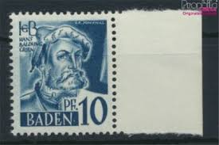 |
| eBay UK | GERMAN Stamps - French Zone Occupancy - Baden 1947 - Complete Set - Mint | eBay UK | 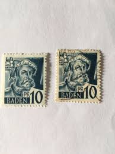 |
| ebid.net | UMM AL QIWAIN, FISH, tropical set 2, multicolour 1972, 1Riyal, #3, sheet of 16 on eBid United States | 207338710 | 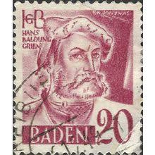 |
| Todocolección | sello de alemania, 10 pfennig baden 1947 - sin - Buy Antique stamps of Germany on todocoleccion | 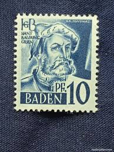 |
| Bob Shop | Germany & Colonies - 1948 French Occupation Zone - MiNr 33 used, stamped was listed for 3.60 on 1 Jul at 15:46 by KHB56 in Johannesburg (ID:644666012) | 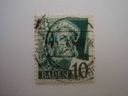 |
| nordfrim.com | Buy Liechtenstein 1946 - MICHEL BL-4 - Mint | 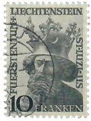 |
| eBay | Lightly Hinged Baden German & Colonies Stamps for sale | eBay | 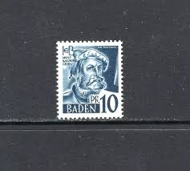 |
| eBay | FRENCH ZONE BADEN 1947 3G,7G ** MNH FLAWLESS Printed on gumside(09298 | eBay | 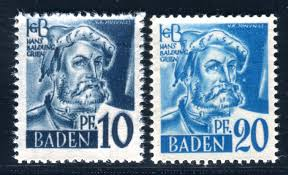 |
| Dreamstime.com | Briefmarke, Gedruckt in Deutschland, Alliierte Besatzung 1945-1949, Zeigt Hans Baldung, Französische Zone - Baden-Serie, Um 1948 Redaktionelles Stockbild - Bild von kopfbedeckung, retro: 161778329 | 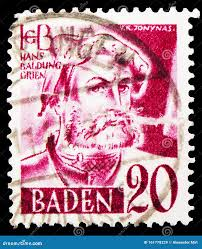 |
| eBay | Germany - Berlin (Western Sectors) 1967 berlin Art Treasures MNH blocks of 4 | eBay | 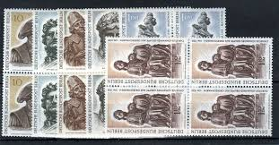 |
| eBay | LIECHTENSTEIN 1946 247 * FLAWLESS HIGHEST VALUE 10 FRANK LUZIUS (F8004 | eBay | 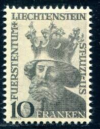 |
| HipStamp | Germany - Baden #5N33 10(pf) Hans Baldung Grien | Europe - Germany & Colonies - German States, General Issue Stamp / HipStamp | 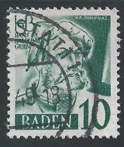 |
| eBay | Liechtenstein 1946 #218 Saint Lucius - Used | eBay | 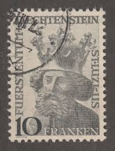 |
| eBay | GERMANY # 1050 - Theologian & Educator John Amos Comenius - MLH | eBay | 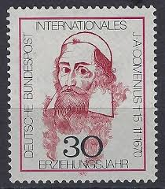 |
| Dreamstime.com | Hans Mark Stock Photos - Free & Royalty-Free Stock Photos from Dreamstime | 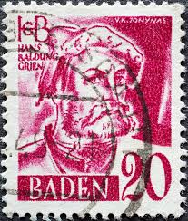 |
| eBay | Baden stamps 1947 MI 11U Imperforated Pair signed SchlegelBPP MNH VF | eBay | 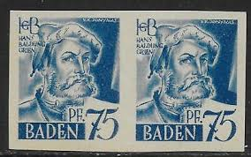 |
| Find Your Stamps Value | BADEN - Hans Baldung Grien 20dpf Brown Briefmarkenpreis | 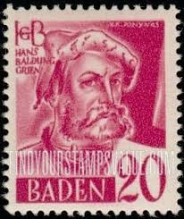 |
| eBay | BRD 1970, International Year of Education, MNH, Mi 656 | eBay | 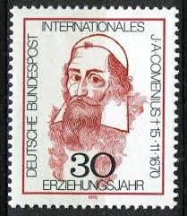 |
| Philatelie Liechtenstein | St. Lucius - 1959 - 1940 - Philatelie Liechtenstein | 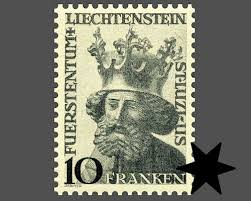 |
| eBay | Germany Stamp Issue Complete Scott # 1268 Unused...Free International Shipping! | eBay | 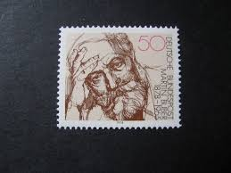 |
| Stamp Community Forum | Luxembourg Stamp Engravers - Page 5 - Stamp Community Forum | 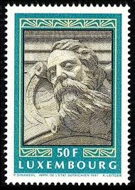 |
| eBay | DDR #MiBl40 MNH S/S 1974 Painter Caspar David Friedrich [1562] | eBay | 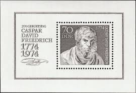 |
| eBay | Specimen, Portugal Sc1949 Sao Carlos Natl. Theatre 200th Anniv. Verdi, Music | eBay | 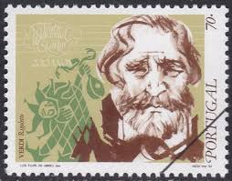 |
| eBay | Germany - DDR : C. D. Friedrich souvenir sheet from 1974 - CTO | eBay | 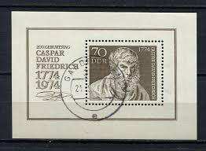 |
| Shutterstock | 2+ Thousand Israeli Stamps Royalty-Free Images, Stock Photos & Pictures | Shutterstock | 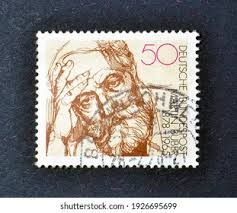 |
| MA-Shops | Bund, Michel Nr. 656 postfrisch | MA-Shops | 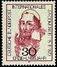 |
| HipStamp | Portugal 645: 50c Vasco da Gama (1469-1524), used, F-VF | Europe - Portugal & Colonies, General Issue Stamp / HipStamp | |
| Alamy | GERMANY - CIRCA 1978: a stamp printed in Germany shows Martin Buber (1878-1965), philosopher, circa 1978 Stock Photo - Alamy | |
| eBay | Germany 1970 MNH Mi 656 Sc 1050 John Amos Comenius.Czech philosopher,pedagogue** | eBay | |
| Numista | Échantillon type Athéna à droite - 10103 (format 100 Francs Delacroix) - France – Numista | |
| eBay | Germany DDR 1562 MNH 1974 C. D. Friedrich - Self-Portrait Souvenir sheet | eBay | |
| eBay | Baden Used PF German & Colonies Stamps for sale | eBay | |
| eBay | Mint Sheet Writer Léon Tolstoi N°1989 X50 1978 Luxe MNH | eBay | |
| eBay | Specimen, Czechoslovakia Sc2902 Historian August Sedlacek (1843-1926) | eBay | |
| eBay | Germany 1050 two stamps,MNH,Mi 656. John Amos Comenius,theologian,educator,1970. | eBay | |
| Alamy | German educator hi-res stock photography and images - Alamy |
{kind=link}
{kind=link}
{kind=link}
{kind=link}
{kind=link}